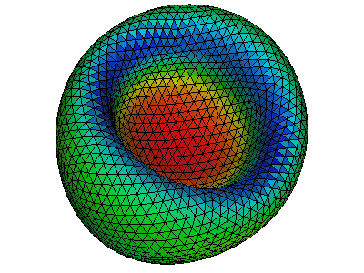

Corpuscles is a C library to resolve the elastic energy and force of a membrane surface, which is represented by an unstructured triangulated mesh. It also simulates transformations between different configurations/shapes of a closed membrane by a minimization procedure under various constraints.
Various components can be switched on/off at will, such as A. Bending elasticity of lipip bilayer. B. Strain (both shear and strecth) easlticity of cytoskeleton. C. Viscosity of lipid membrane. D. Thermal fluctuations of lipid membrane. E. Constraint of total area of a closed membrane surface. F. Constratin of total volume of a closed membrane surface. G. Constratin of area difference between outer- and inner-surface.
For different components, variations of model/law can be selected such as Helfrich/spontaneous curvature model for bending elasticity and Skalak law for strain elasticity.
For different models/laws, variations of schemes impelemented can also be choosen such as Gompper&Kroll scheme and Juelicher schemes for the bending model of spontaneous curvature.
Please see details in https://cselab.github.io/corpuscles
Minimal requirements pkg-config, make, gcc-c. Optional requrements gsl, geomview, atest, maxima, pandoc.
Download code from
Adjust conf.mk if you want to change defaults
CC = c99
CFLAGS = -O2 -g
PREFIX = $(HOME)
DATAPATH = $(HOME)/.co
MAXIMA_HOME = $(HOME)/.maxima
# prefix
P = coLibrary is installed under the path PREFIX. Add PREFIX/bin and PREFIX/man to envariament variables PATH and MANPATH. Run
If you have atest installed you can run
A simple example is in example/hello
$ cat main.c
#include <stdio.h>
#include <real.h>
#include <co/tri.h>
#define FMT CO_REAL_OUT
int main(void) {
enum {X, Y, Z};
real a[3], b[3], c[3], A;
a[X] = 0; a[Y] = 0; a[Z] = 0;
b[X] = 1; b[Y] = 0; b[Z] = 0;
c[X] = 0; c[Y] = 1; c[Z] = 0;
A = tri_area(a, b, c);
printf("Area is " FMT "\n", A);
}$ cat Makefile
include ../../conf.mk
PREC = d
CO_CFLAGS = `co.conf --cflags $(PREC)`
CO_LDFLAGS = `co.conf --libs $(PREC)`
main: main.c
$(CC) main.c $(CFLAGS) $(CO_CFLAGS) $(LDFLAGS) $(CO_LDFLAGS) -o main
test:
install:
.PHONY: clean test install doc
clean:; rm -f main
An example is in example/off/read
$ cat main.c
#include <stdio.h>
#include <real.h>
#include <co/array.h>
#include <co/he.h>
#include <co/y.h>
#define FMT CO_REAL_OUT
int main(void) {
real *x, *y, *z;
real hi, lo;
He *he;
int nv;
y_inif(stdin, &he, &x, &y, &z);
nv = he_nv(he);
hi = array_max(nv, x);
lo = array_min(nv, x);
printf("number of vertices is %d\n", nv);
printf(FMT " " FMT "\n", hi, lo);
y_fin(he, x, y, z);
}Read off, compute area fro every triangle, and output off file with colors (example/off/write/area)
#include <stdio.h>
#include <real.h>
#include <co/area.h>
#include <co/err.h>
#include <co/off.h>
#include <co/he.h>
#include <co/memory.h>
#include <co/y.h>
int main(void) {
int nt;
real *x, *y, *z, *a;
He *he;
y_inif(stdin, &he, &x, &y, &z);
nt = he_nt(he);
CALLOC(nt, &a);
he_area_tri(he, x, y, z, a);
boff_tri_fwrite(he, x, y, z, a, stdout);
y_fin(he, x, y, z);
FREE(a);
}
We use a wrapper to geomview.
$ co.geomview -h
co.geomview [-t x y z] [-r x y z] [-a APPEARANCE] [-o FILE] [OFF]..
he geomview wrapper
-t x y z translation
-r x y z rotation in degree
-f zoom field of view (default is 40)
-a APPEARANCE load appearance from a file
-o FILE write FILE and exit
-O write all PPM files and exit
-OO write all oogl files and exit
-format ppmscreen|ppm|ps|ppmosmesa|ppmosglx
-p command process every off file by running 'command' < IN.off > OUT.off
-n none|each|all|keep normalization status (see geomview manual)
-c command run command on every file and write output to stderr, %f is replaced by a file name
-i command run command on every image, %i replaced by input; %o -- by output; %b --- by basename
Keys:
q: quit
s: save snap.ppm
S: save every snapshot
p: panel
j/k: switch between off files
J: dump file name
[SPC]: dump orientation and field of view
Environment variables:
WX, WY: resolution of the snapshot (default: 800x600)
BACKGROUND: default ('1 1 1')
Examples:
co.geomview -t 0.25 0.25 0 data/rbc.off
co.geomview -a data/appearance data/rbc.off
co.geomview -o snap.ppm data/rbc.off
co.geomview data/rbc.off data/sph.off
co.geomview -p co.orient data/rbc.off data/sph.off
co.geomview -c off.volume data/rbc.off data/sph.offargv and shift
git pages docs/index.html is generated from README.md.m4. To update run
requires pandoc.